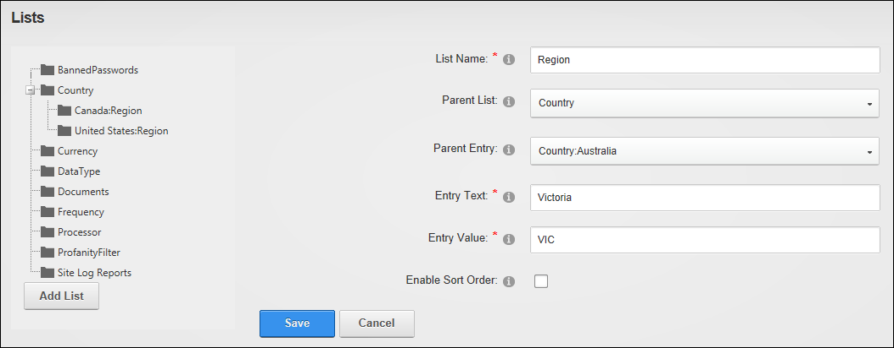
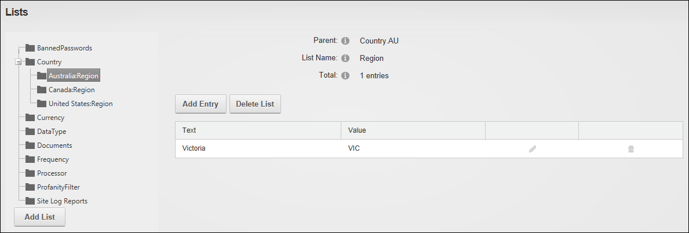

Adding a Child List
How to add a child list to an existing list that is maintained by SuperUsers on the Host Lists page. For example, the below tutorial shows how to add a list of regions to Australia under the Country list.
- Navigate to Host >
 Lists.
Lists.
- Click the Add List button.
- In the List Name text box, enter a name for the list. E.g. Region
- At Parent List, select the list to add the new list under. E.g. Country
- At Parent Entry, select the entry you to use as the new list. E.g. Country.Australia
- In the Entry Text text box, enter the name to be assigned to the List E.g. Victoria
- In the Entry Value text box, enter the identifier of the first entry of the list. E.g. VIC
- Optional. At Enable Sort Order, mark
 the check box if you want to be able to reorder the entries in this list - OR - Unmark
the check box if you want to be able to reorder the entries in this list - OR - Unmark  the check box to use alphabetical sort order for list entries.
the check box to use alphabetical sort order for list entries.

- Click the Save button. The new list and the first entry for this list is now displayed, as shown below. You can now add additional entries to this list. See "Adding a List Entry"
